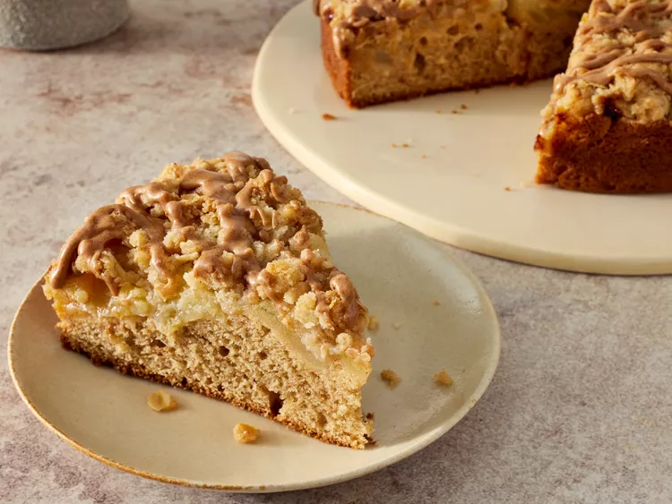
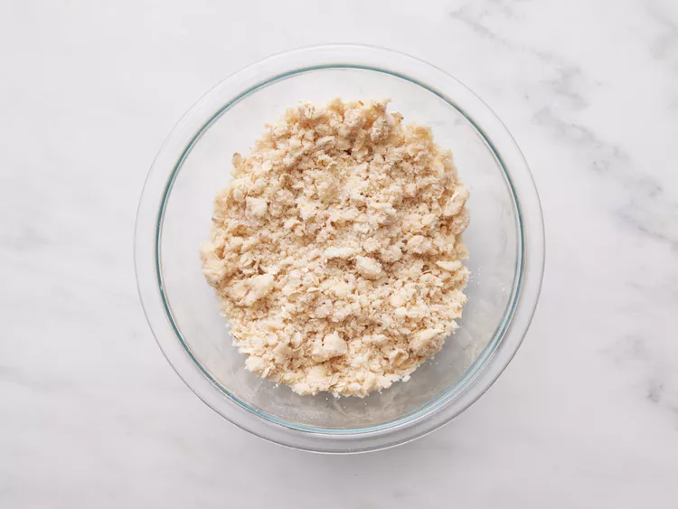

Irish Apple Cake
Home

Description
This Irish apple cake has a delicate texture and is topped with a cinnamon-oat streusel and cinnamon glaze. A must for St. Patrick's Day or easy enough for an anytime snack.
Ingredients
-
Streusel:
- 1/2 cup all-purpose flour
- 1/2 cup white sugar
- 1/4 cup old-fashioned rolled oats
- 1/4 teaspoon salt
- 1/4 teaspoon ground cinnamon
- 6 tablespoons unsalted butter, cubed
-
Cake:
- cooking spray
- 1/2 cup unsalted butter, room temperature
- 1/4 cup white sugar
- 1/4 cup packed light brown sugar
- 2 large eggs, room temperature
- 2 teaspoons vanilla extract
- 1 1/4 cups all-purpose flour
- 1 teaspoon baking powder
- 1 teaspoon ground cinnamon
- 1/4 teaspoon salt
- 3 tablespoons whole milk
- 2 large Granny Smith apples, peeled and cut into 1/4-inch thick slices
-
Cinnamon Glaze:
- 1/2 cup confectioners' sugar
- 1 teaspoon ground cinnamon
- 2 teaspoons whole milk
Directions
Step 1
For the streusel, combine flour, sugar, oats, salt, and cinnamon in a bowl. Using a fork or pastry cutter, cut butter into the mixture until it is fully incorporated and has the texture of coarse bread crumbs, about 2 minutes. Chill in the refrigerator until ready to use.
